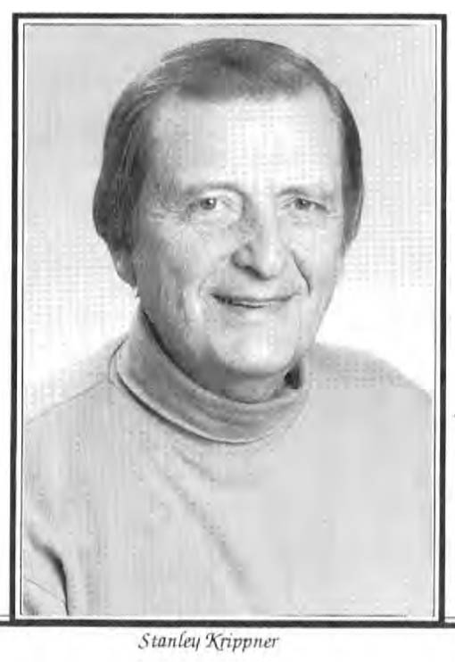

For many centuries, Western investigators had little respect or regard for native healing systems. In recent years, however, such prominent psychotherapists as Jeanne Achterberg (1985), E.F. Torrey (1986), and J.D. Frank (Frank & Frank, 1991) have found many native healing systems to be extremely sophisticated and to contain elements that can be instructive for Western practitioners, e.g., the use of imagination and altered states of consciousness for health and personal growth.

I have compared the healing models of several native healing traditions with those of allopathic medicine, finding both similarities and differences (Krippner & Welch, 1992). Intending to do the same for dreamworking systems, I located a model proposed by Ullman and Zimmerman (1979) that compared three Western systems, those of Sigmund Freud, Carl Jung, and Montague Ullman. I added two facets to the model, and revised several others to provide a better basis for cross- cultural comparison. The resulting 10-facet model still was useful in comparing the systems of Freud, Jung, and Ullman:

1. What is the function of dreams?
A. Freud: To discharge repressed instinctual responses.
B. Jung: To disclose unacknowledged aspects of the self.
C. Ullman: To serve as an adaptive form of consciousness during sleep.
2. What motivates people to recall their dreams?
A. Freud: People often try not to recall dreams because they contain repressed material, but in psychoanalysis, the dream is the "royal road to the unconscious" and helps people to understand their personal psychodynamics, e.g., the role of wish fulfillment in dreams.
B. Jung: By recalling dreams, people can work toward individuation, e.g., by understanding how, in dreams, they compensate for the undeveloped parts of their psyche.
C. Ullman: Through dream recall, dreamers can become aware of their waking life predicament and their feelings about it.
3. What is the source of dreams?
A. Dreams come from the unconscious, which contains repressed desires.
B. Dreams come from the unconscious, which contains the undeveloped aspects of the psyche.
C. Dreams come from the unconscious, which consists of material that dreamers ignore or repress.
4. What is the language of dreams?
A. Imagery is the language of the unconscious and of dreams.
B. Imagery is the language of the unconscious and of dreams.
C. Imagery is a vehicle for expressing dream content and feeling as visual metaphors.
5. Are dream symbols universal?
A. Sexual symbols occur, in various forms, in all cultures.
B. Archetypal symbols are universal, personal symbols are not.
C. There are no universal symbols; dream imagery is rooted in one's daily experience and in one's culture.
6. What is the role of one's current life situation in dreams?
A. Day residue touches off memories of an earlier conflict.
B. Day residue opens up undeveloped parts of the psyche.
C. Day residue opens up issues not attended to while awake.
7. What techniques are used to work with dreams?
A. Free association is used in dream working.
B. Free association and amplification are used in dreamworking.
C. Dreamworking assesses dream metaphors through the exploration of the associative context.
8. What is the role of the dream worker?
A. Psychoanalysts tell dreamers their dreams' meanings.
B. Psychotherapists function as guides.
C. Psychotherapists and other dreamworkers function as guides but the dreamer is the final felt authority regarding the dream's meaning.
9. What role do dreams play in the culture?
A. Dreams reflect a culture's repressed material.
B. Dreams reflect a culture's mythic archetypes.
C. Dreams are socially grounded in the culture and reflect unsolved social as well as personal issues.
1O. How are anomalous dreams viewed?
A. Anomalous dreams are subject to the same psychodynamics as other dreams.
B. Anomalous dreams reflect archetypal material and synchronicities.
C. Anomalous dreams are valuable resources, e.g., in understanding emotional interactions.
When doing archival or field research with indigenous groups, this modified Ullman-Zimmerman model can be used to advantage. However, it is important to try to differentiate "function" and "motive." The "function" of the dream might be conceptualized as adaptive (e.g., to assist the myelinization of nerve cells, to develop the eyes' binocularity) or informational (e.g., to assist in problem-solving, to bring new information to the dreamer). The "motive" to recall one's dreams might be to find game during the hunt, to make contact with deceased relatives, or to receive direction as to one's vocation.
"Function" refers to the operation of the total human organism within a given historical and geographical contex t, while "motive" refers to more specific personal and community goals. Ofien there will be more than one function and more than one motive. In addition, there might be a {natural} function of dreaming (e.g., vigilance during the night) and an overlaid function (e.g., humans have learned to use dreams as natural healing mechanisms).
In identifying the source of dreams, the Western concept of the unconscious may be comparable in some ways to the "spirit realm," the "other world," or other purported realities of which the dreamer is usually unawa re during wakefulness. The language of the dream can be described in terms of dream images as aspects of human imagination or as actual characters cmd events that exist in a parallel or non-ordinary reality. The dreamer's life situation often needs to be studied in terms of community concerns, e.g., hunting, harvesting, fighting, worshiping.
Techniques of working with dreams may include both individual and group dreamwork, if both are present in a given system. The dreamworkers in native cultures might be shamans, mediums, priests, priestesses, etc. Native dreamworking techniques would include those carried out by the tribal practitioner, the family, or the community as a whole. Dreamworking often plays a more important role in native societies than in Western culture, as do anomalous dreams. It is no surprise that these two facets were omitted by Ullman and Zimmerman; I added them because of their ubiquitous presence in native dreamworking systems.
As an example of how the modified Ullman-Zimmerman model can be used cross-culturally, I read accounts of the way dreams were used by the Maricopa tribe. Located in southeastern California, and a member of the Hokan-Yuman linguistic group, the Maricopa Indians lived in domed bark, thatched, or hide houses. When the Europeans arrived in North America, the Maricopa cultivated maize but also gained sustenance from a variety of wild plants and game (Yenne, 1986). At the heart of the Maricopa culture was the dream experience. Spier (1970) remarks that "it was the one thing of which they constantly talked, the [most] significant aspect of their life ... .Dream experience was at the bottom of all success in life, and as such [was] their constant preoccupation. Learning was replaced by dreaming" (p. 236). The way that dreams were used by the Maricopa responds to each of the questions proposed by the modified Ullman-Zimmerman model:
1. {What is the function of dreams?}
Dreams were believed to be nighttime adventures that expressed "spirit, " i.e., supernatural power.
2. {What motivates people to recall their dreams?}
It was held that dreams bestowed special abilities (e.g., to heal, to hunt); dreams often produced sacred songs and, rarely, entire song cycles. Dreams enabled guardian spirits to interact with the dreamer. Dreams predicted the future so that the dreamer could attempt to avoid or exploit the forthcoming event. Dreams indicated the degree of success the dreamer might expect in his or her life.
3. {What is the source of dreams?}
It was believed that one's soul was "taken out" by power animals or spirits during dreaming to a "dream world," the source of dreams. Songs, cures, future events, etc., were revealed to the soul during dreaming.
4. {What is the language of dreams?}
It was thought that dream images were entities from the "dream world" that depicted dreamers' potential abilities, forthcoming circumstances, etc. For example, dream images of Eagle indicated that the dreamer could become a great singer, of Buzzard or Coyote to become a healer, of Mockingbird to become an orator, of Frog to become a sorcerer, of Crow to become a thief. lt was believed that men who dreamed of a certain mountain would become "Berdaches" (i.e., transvestites) and that dreams of birds fighting each other meant that the dreamer would become sick.
5. {Are dream symbols universal?}
Meanings of dream images were the same for all tribal members, but there could be multiple meanings for some images, e.g., Buzzard could reveal an enemy's location as well as disclose cures.
6. {What is the role of one's life situation in dreams?}
Dreams could be rehearsals for life events, e.g., pregnancy. One's success depended on dreaming, but it was believed that children who dreamed too much might experience a sex change. The Maricopa took the position that most of their dreams dealt more with the contemporary scene than with tribal myths.
7. {What techniques are used to work with dreams?}
Dreams were frequently discussed among friends. When dreamers told their dreams, they would begin by mentioning the song from their dream, if one was present. Later, song cycles would review important individual dreams for the benefit of the entire community.
8. {What is the role of the dreamworker?}
The shaman and the song leader were the tribal authorities on dreams, and would discuss dreams with tribal members. The shaman was considered the expert regarding the cultural meanings of dreams, but both practitioners would frequently dream songs themselves, and would decide what songs of other dreamers would be incorporated into song cycles. However, a dreamer would not reveal a dream to anyone else if the dream involved a spirit visitation over a long period of time; the dreamer would be trained as a warrior, an orator, or a member of some other vocation during sleep. It was only after the spirits pronounced their preparation complete that the dreamer could use the powers they granted.
9. {What role do dreams play in the culture?}
It was held that spirits only manifest themselves in dreams, and that they grant specific powers to dreamers who are conscientious and prepared. More than any other activity, dreams established and reinforced the unity of the Maricopa culture.
10. {How are anomalous dreams viewed?}
It was believed that supernatural power only comes in dreams. The Maricopa used the same word {cara'g} for "spirit" and "dream."
The educational and training function by dreams among the Maricopa demonstrate how malleable the dreaming process is, and how a culture can shape its members' dreams. The social roots of the dream have been discussed by Ullman (1960) who observed how cultural myths serve to make experience intelligible, and that the unsolved problems of individuals in that culture are worked with within that mythic framework. Myths often come to life in a dream as sources of support or as sources of cmxiety, depending on the underlying nature of the immediate conflict (p. 184).
This brief discussion illustrates the value of studying dream systems from other cultures. It can demonstrate the limits of social frameworks in which the individual dream operates, as well as the limits of idiosyncratic elements that dreamers bring to their dream experience. It is easier to detect mythic elements in the dreams of people from native societies than from dreamers from societies without a monolithic mythic structure. In these cases, however, the impact of family and institutional myths may be detected. There is an urgent need for more information in these areas, and cross-cultural research can play an important role in this quest.
References:
Achterberg, J. (1985). Imagery in Healing: Shamanism and Modern Medicine. Boston: Shambhala.
Frank, J.D., & Frank, J.B. (1991). Persuasion and Healing: A Comparative Study of Psychotherapy (3rd ed.). Baltimore: Johns Hopkins University Press.
Krippner, S., & Welch, P (1992). Spiritual Dimensions of Healing: From Native Shamanism to Contemporary Health Care. New York: Irvington.
Spier, L. (1970). Yuman tribes of the Gila River. New York: Cooper Square Publishers.
Torrey, E.F. (1985). Witch Doctors and Psychiatrists: The Common Roots of Psychotherapy and Its Future. New York: Harper and Row.
Ullman, M. (1960). The social roots of the dream. American journal of Psychoanalysis, {20}, 180-196.
Ullman, M., & Zimmerman, N. (1979). Working with Dreams. Los Angeles: Tarcher.
Yenne, B. (1986). The Encyclopedia of North American Indian tribes. Greenwich, CT: Bison Books.